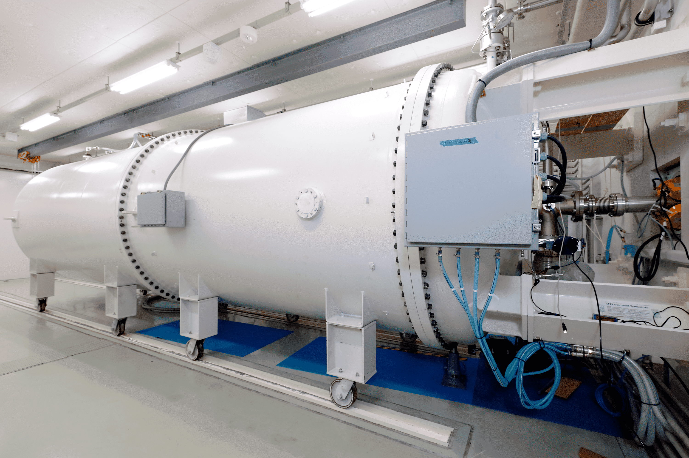

Facility
Neutron Source NUANS Specifications
Overview of NUANS
NUANS (Nagoya University Accelerator-driven Neutron Source) is a compact accelerator-driven neutron source owned and operated by our laboratory. It is mainly dedicated to BNCT developments.
The system uses a Dynamitron accelerator to accelerate protons, which then bombard a lithium target to generate neutrons.
Currently, protons are accelerated up to 2.6 MeV, and the beam current is 2 mA in the operation. NUANS serves as the cornerstone for multidisciplinary projects, ranging from the development of advanced neutron detection devices and biological effect evaluation in BNCT.

The Dynamitron accelerator installed at Yoshihashi Laboratory
Accelerator & Neutron Source Specs
The IBA Dynamitron accelerator at NUANS is a robust electrostatic system capable of delivering high-current continuous wave (DC) proton beams stably.
| Accelerator Type | Electrostatic Dynamitron Accelerator (manufactured by IBA) |
|---|---|
| Accelerated Particle | Proton |
| Max Proton Energy | 2.8 MeV |
| Max Beam Current | 15 mA |
| Beam Mode | DC (Continuous Wave) |
Current Operations: Operating at a proton beam energy of 2.6 MeV and 2 mA, producing an approximate neutron flux of 4×108 n/cm2/sec (Gold foils experiment).
Neutron Energy Spectrum
The neutron energy spectrum obtained from Monte Carlo calculations using PHITS is shown below.
calculating...
References
- updating...
- updating...